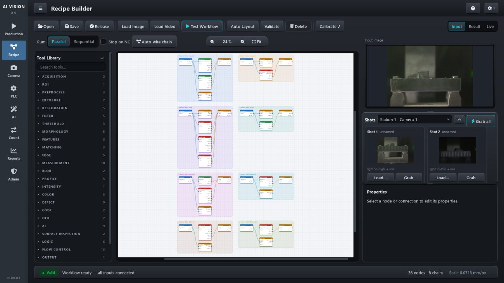
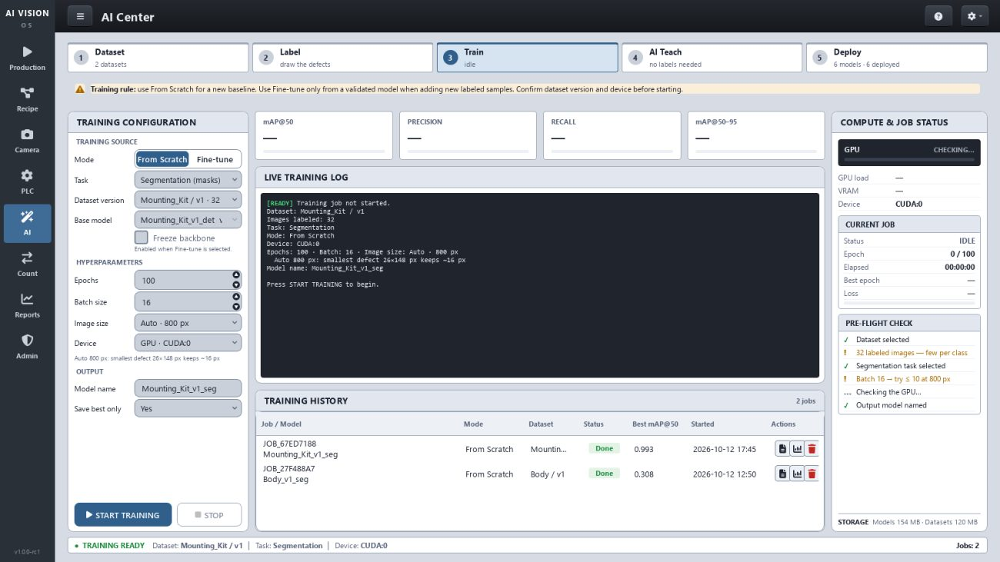
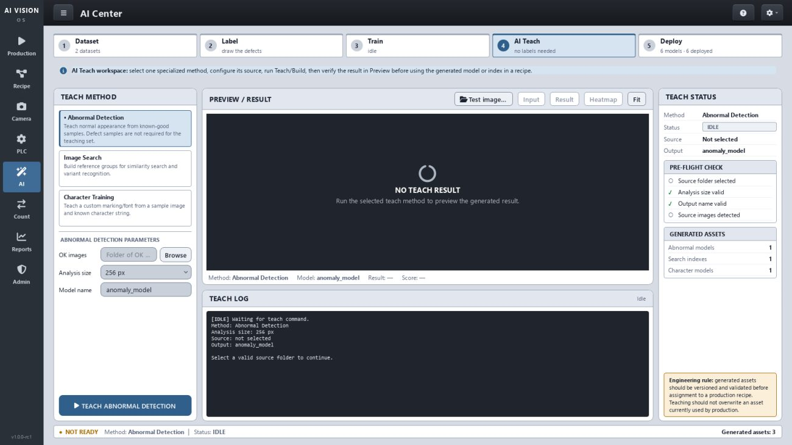
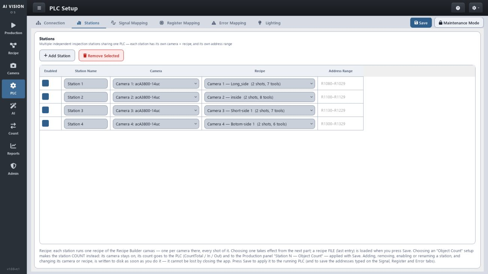
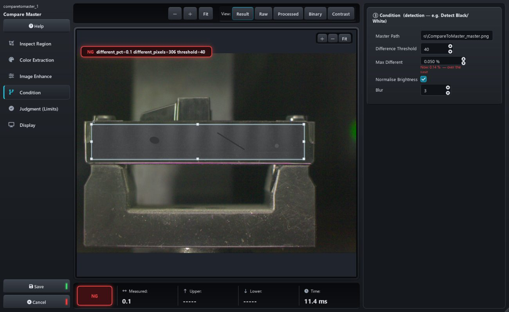
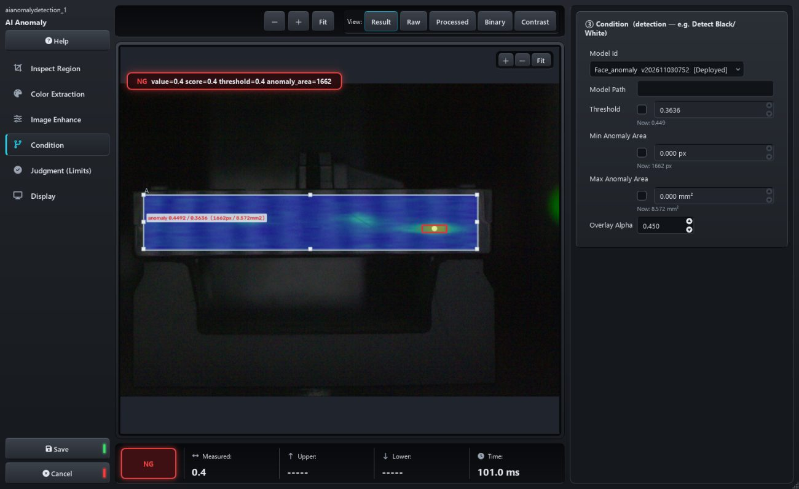
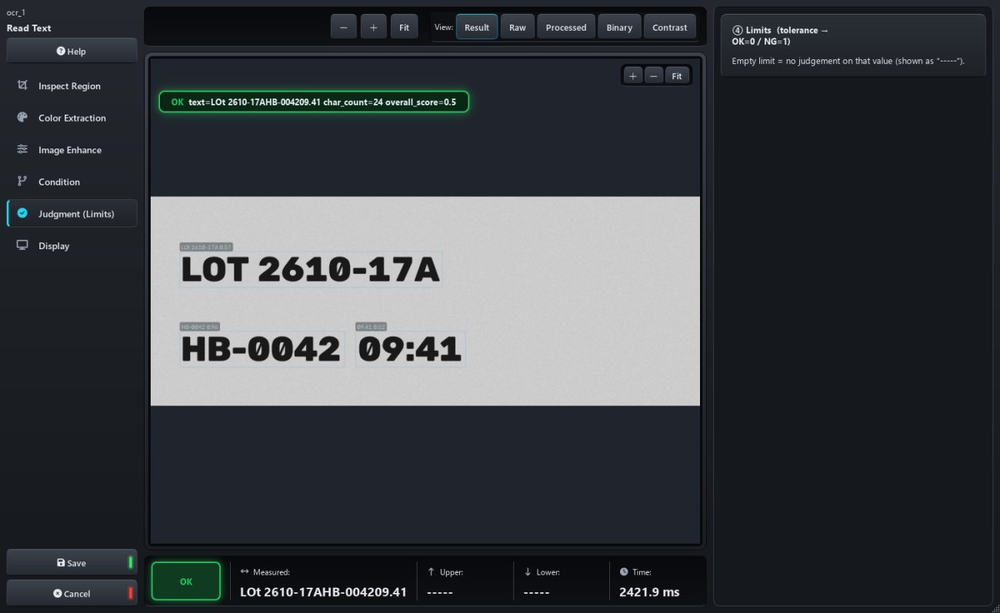

Kiểm tra ngoại quan không cần viết codeVisual inspection without writing code
AI Vision OS gom camera, PLC và AI vào một phần mềm. Kỹ sư kéo‑thả tool thành quy trình, thử ngay trên ảnh, rồi đưa vào chạy sản xuất.AI Vision OS brings cameras, PLCs and AI into one application. Engineers drag tools into a workflow, test it on images, then put it into production.
Từ ý tưởng tới dây chuyền trong 4 bướcFrom idea to production line in 4 steps
PLC trigger → chụp ảnh → định vị → đo / tìm lỗi / AI → OK/NG → trả kết quả cho PLC → lưu ảnh và dữ liệu.PLC trigger → capture → locate → measure / defects / AI → OK/NG → result to the PLC → save image and data.
01
Kết nốiConnect
Gán camera cho từng trạm, kết nối PLC, cài đèn chiếu sáng theo từng shot.Assign cameras to stations, connect the PLC, set lighting per shot.
02
Dựng recipeBuild a recipe
Kéo‑thả tool thành sơ đồ, tự nối dây, chỉnh ngưỡng và thử ngay trên ảnh hoặc video.Drag tools into a graph, auto‑wire, set thresholds and test on images or video.
03
Dạy AITeach the AI
Gán nhãn bằng Magic Wand, huấn luyện YOLO, hoặc chỉ cần ảnh OK với AI Teach.Label with Magic Wand, train YOLO, or use only OK images with AI Teach.
04
Chạy sản xuấtRun production
Phát hành recipe, theo dõi OK/NG theo trạm, thống kê Pareto và SPC.Release the recipe, watch OK/NG per station, Pareto and SPC statistics.
Giao diệnInside the app
Mọi thứ trên một màn hìnhEverything on one screen
Ảnh chụp từ phần mềm thật, không phải bản mô phỏng.Screenshots of the real software, not mock‑ups.




Kết quả thậtReal results
Bắt lỗi nhỏ, đọc chữ, báo OK/NG tức thìCatch small defects, read text, judge OK/NG instantly

NG
Compare Master
So với ảnh mẫu, phát hiện vết xước, chấm và đốm trên bề mặt.Compares against a master image and finds scratches, spots and marks.
306 px11.4 ms

NG
AI Anomaly
Chỉ học từ ảnh OK, heat map chỉ ra vùng bất thường.Learns from OK images only; a heat map shows the anomaly.
score 0.458.57 mm²

OK
Read Text (OCR)
Đọc mã lô, số seri, ngày giờ in trên sản phẩm.Reads lot codes, serial numbers and printed dates.
LOT 2610‑17A24 chars
Tính năngFeatures
Một phần mềm, đủ cho cả trạm kiểm traOne application for the whole inspection station
Recipe Builder
Chạy song song hoặc tuần tự, rẽ nhánh OK/NG, vòng lặp, nhóm node. Tự nối dây, kiểm tra lỗi sơ đồ, hiệu chuẩn mm/pixel, quản lý phiên bản và phát hành recipe.Parallel or sequential, OK/NG branching, loops, node groups. Auto‑wiring, graph validation, mm/pixel calibration, recipe versioning and release.
AI Center
Dataset → Label → Train → AI Teach → Deploy. Magic Wand (SAM), YOLO, fine‑tune, gán nhãn theo keyframe video.Dataset → Label → Train → AI Teach → Deploy. Magic Wand (SAM), YOLO, fine‑tuning, video keyframe labelling.
Production
Ảnh và OK/NG theo trạm, theo shot; sản lượng, Pareto lỗi; chế độ RUN / EDIT.Image and OK/NG per station and shot; output, defect Pareto; RUN / EDIT modes.
Camera
Live view, exposure, gain, độ phân giải, trigger; gán camera cho từng trạm.Live view, exposure, gain, resolution, trigger; per‑station assignment.
PLC
Map tín hiệu, thanh ghi, mã lỗi; đèn theo shot; chế độ bảo trì; tự kết nối lại.Signal, register and error mapping; per‑shot lighting; maintenance mode; auto‑reconnect.
Object Count
AI + tracking (ByteTrack / BoT‑SORT): đếm qua đường hoặc vùng, vào / ra, gửi PLC.AI + tracking (ByteTrack / BoT‑SORT): line or zone counting, in / out, sent to the PLC.
Tỉ lệ mm/pixel tự bắt cạnh sub‑pixel, hiệu chuẩn theo đường, servo, stereo đo tư thế 3D.mm/pixel with sub‑pixel edge snapping, line calibration, servo, stereo 3D pose.
Hướng dẫn tích hợpBuilt‑in manual
Hướng dẫn tiếng Việt có ảnh từng màn hình, nút ? ở mọi trang, tải được PDF / DOCX.Illustrated Vietnamese manual, a ? button on every page, PDF / DOCX download.
Thư viện toolTool library
126 tool cho mọi bước kiểm tra126 tools for every inspection step
Chọn một nhóm để xem các tool trong đó.Pick a group to see its tools.
Ứng dụngUse cases
Phù hợp với nhiều ngành sản xuấtFits many kinds of production
Đo kích thước, góc, khe hở; vết xước, móp, nứt trên bề mặt.Dimensions, angles, gaps; scratches, dents and cracks.
Nhựa & cao suPlastic & rubber
Bavia, thiếu liệu, lỗ, màu sai, biến dạng đường viền.Flash, short shots, holes, wrong color, contour defects.
Bao bì & in ấnPackaging & printing
Đọc hạn sử dụng, mã lô, barcode, QR; kiểm tra chữ in.Expiry dates, lot codes, barcodes, QR; print verification.
Dệt may & dâyTextile & wire
Kiểm tra sợi, bề mặt vải, đứt sợi, kết cấu bất thường.Strands, fabric surface, broken threads, abnormal texture.
Đếm & theo dõiCounting & tracking
Đếm sản phẩm trên băng chuyền, đếm vào / ra, gửi số cho PLC.Count parts on conveyors, in / out, counts sent to the PLC.
Phần cứngHardware
Dùng thiết bị có sẵn trong nhà máyWorks with the equipment you already have
Camera
BaslerUSB3 · GigE
FLIR / TeledyneSpinnaker
USB / UVCWindows · Linux
Thư mục ảnhImage foldercamera ảovirtual
PLC
KEYENCE KV‑8000Host Link
MitsubishiMC protocol
OmronFINS
Panasonic FP7MEWTOCOL
Các PLC khácOther PLCsModbus TCP
Máy tínhComputer
Windows 10 / 11x64
NVIDIA Jetson OrinJetPack 6
GPU NVIDIANVIDIA GPUCUDA · không bắt buộcCUDA · optional
Vì sao chọnWhy AI Vision OS
Làm cho kỹ sư nhà máyMade for factory engineers
Không cần lập trìnhNo programming
Kéo‑thả và chỉnh thông số; kỹ sư sản xuất tự dựng và sửa recipe.Drag, drop and tune; production engineers build and edit recipes themselves.
Chạy tại xưởngRuns on site
Phần mềm và AI chạy trên máy tại chỗ, không phụ thuộc cloud.Software and AI run on the local PC, with no cloud dependency.
Key vĩnh viễnPerpetual key
Một key cho mỗi máy, không hết hạn, giữ nguyên khi cài lại Windows.One key per PC, never expires, survives a Windows reinstall.
AI có hoặc không GPUAI with or without a GPU
Có GPU NVIDIA thì dùng CUDA, không có thì tự chạy bằng CPU.CUDA with an NVIDIA GPU, automatic CPU fallback without one.
Tài liệu tiếng ViệtVietnamese manual
Hướng dẫn chi tiết có ảnh từng màn hình, ngay trong phần mềm.A detailed, illustrated manual built into the software.
Có thể mua kèm mã nguồnSource code available
Tùy chọn mua kèm mã nguồn để tự phát triển thêm.An option to buy the source code and extend it yourself.
FAQ
Câu hỏi thường gặpFrequently asked questions
Có bắt buộc phải có GPU không?Do I need a GPU?
Không. Mọi tính năng AI tự chạy bằng CPU khi máy không có GPU. Có GPU NVIDIA thì huấn luyện và chạy AI nhanh hơn nhiều.No. Every AI feature falls back to the CPU without a GPU. An NVIDIA GPU makes training and inference much faster.
Bản quyền tính theo máy như thế nào?How does licensing work?
Lần chạy đầu, phần mềm hiện Machine ID của máy. Bạn gửi mã này để nhận một key. Key không hết hạn, vẫn dùng được khi thay ổ đĩa hoặc cài lại hệ điều hành, nhưng không dùng được trên máy khác.On first launch the software shows the PC's Machine ID. Send it to receive a key. Keys never expire and survive a drive replacement or OS reinstall, but do not work on another PC.
Một máy chạy được bao nhiêu camera?How many cameras can one PC run?
Tới 4 trạm, mỗi trạm một camera và một recipe, mỗi recipe có thể chụp nhiều shot với nhiều chế độ đèn. Cả 4 trạm dùng chung một PLC.Up to 4 stations, each with one camera and one recipe; each recipe can take several shots under different lights. All 4 share one PLC.
Có chạy được trên máy tính nhúng không?Does it run on embedded hardware?
Có. Ngoài Windows 10/11, phần mềm chạy trên NVIDIA Jetson Orin (JetPack 6). Recipe dựng trên Windows chạy được trên Jetson và ngược lại.Yes. Besides Windows 10/11, it runs on NVIDIA Jetson Orin (JetPack 6). A recipe built on Windows runs on Jetson and the other way round.
Có bản dùng thử không?Is there a trial?
Có. Liên hệ qua email hoặc điện thoại bên dưới để nhận bộ cài đặt và key dùng thử.Yes. Contact us by email or phone below for the installer and a trial key.
Liên hệContact
Sẵn sàng thử trên dây chuyền của bạn?Ready to try it on your line?
Nhận bộ cài đặt, bản dùng thử, mã nguồn hoặc báo giá.Get the installer, a trial, the source code or a quote.